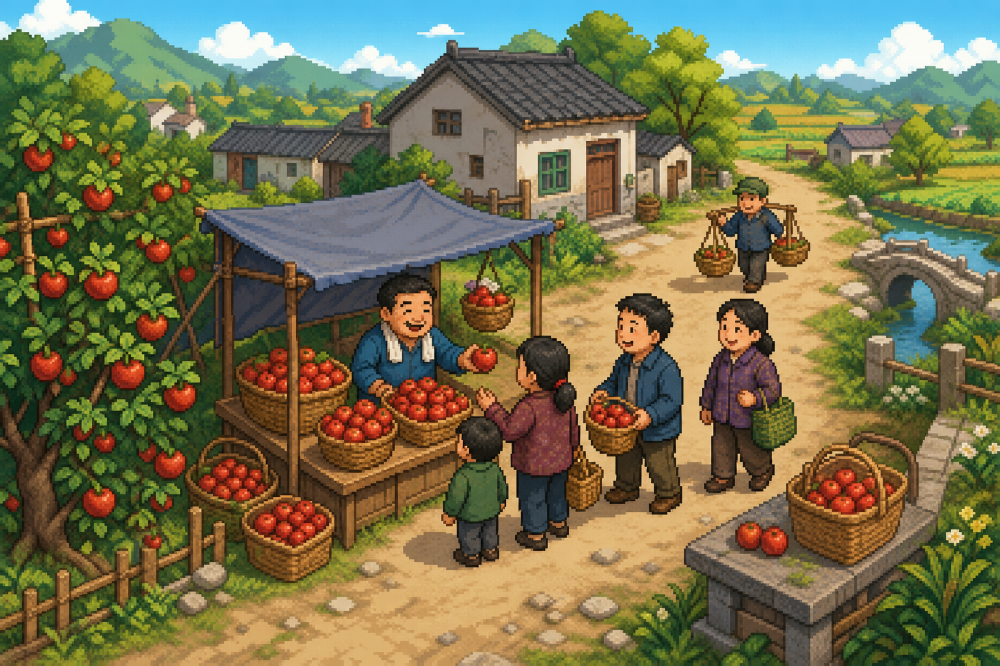
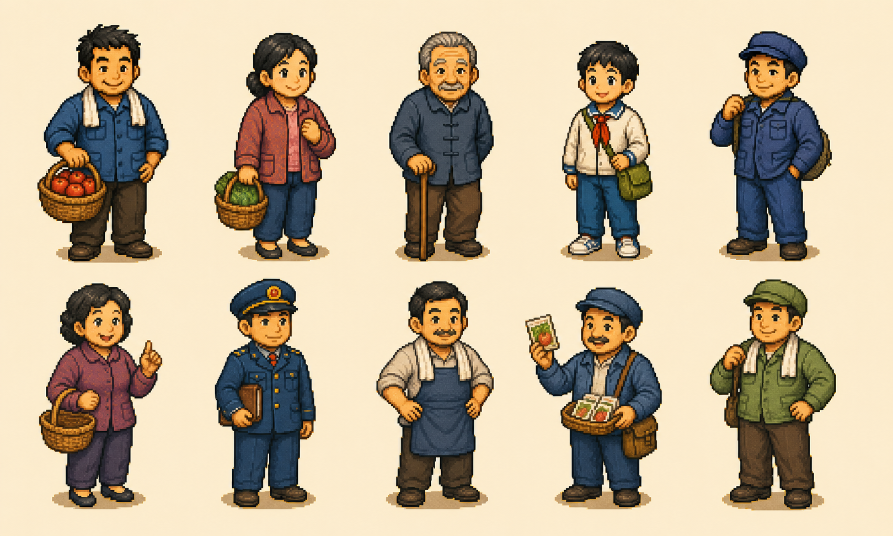
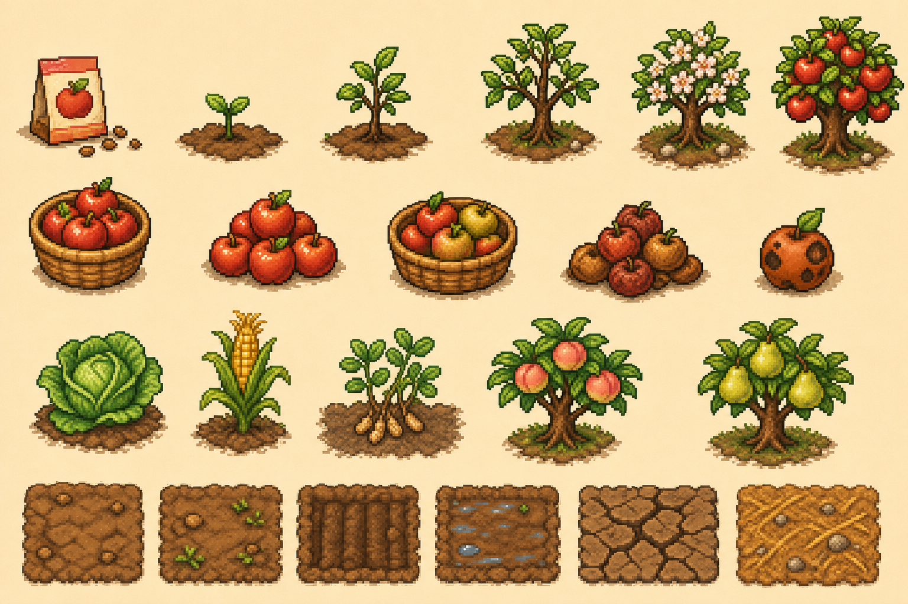
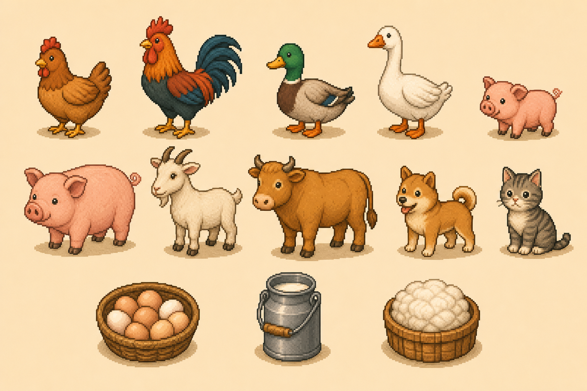
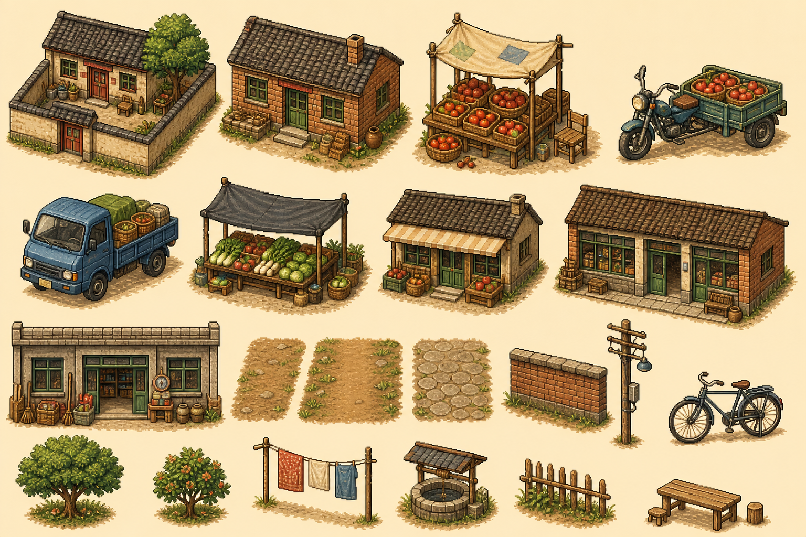
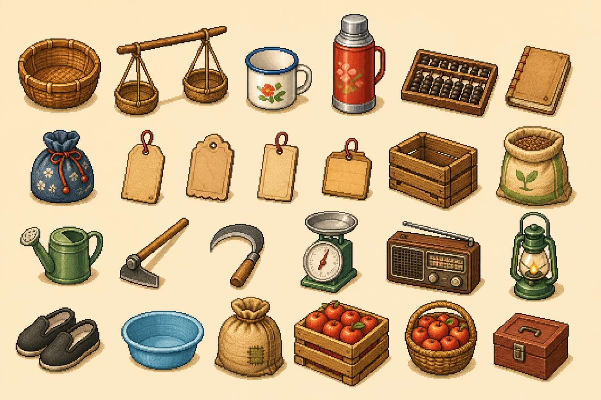

2D 像素经营模拟游戏设计方案
八九十年代中国乡镇背景下，围绕劳作、售卖、资金周转和经营扩张的高压力策略游戏。
一、游戏定位
游戏发生在八九十年代的中国乡镇。个体经营、赶集贸易、路边摊和小商品买卖逐渐活跃起来， 但机会总是和生活压力、现金周转、管理检查、邻里关系、人情往来绑在一起。
玩家不是追求一夜暴富，而是在真实生活压力下靠判断和积累把生意做大。核心幻想不是“轻松发财”， 而是“辛苦弄来的货终于卖出去了，今天的钱又能撑住家里，并给明天多一点选择”。
- 题材关键词：乡镇、下海、路边摊、赶集、熟人社会、家庭开销、管理检查、现金流。
- 体验关键词：劳动回报、经营判断、风险权衡、资金周转、规模扩大、生活压力。
- 设计倾向：游戏更偏经营判断，不是纯劳作执行；出摊本身应该是一笔需要计算的小生意。
二、核心体验
- 劳作变成货物：玩家通过种植、养殖、加工或进货获得真实可管理的商品，而不是抽象收入。
- 货物卖成现金：玩家选择带什么货、去哪里卖、卖多贵、摆多久，看到库存减少、现金增加和顾客反应。
- 现金变成能力：收入可以用于补货、扩产、改善运输、承担账单、雇佣员工或提高抗风险能力。
- 压力来自取舍：高人流可能伴随高风险，低价能快卖但利润薄，高价能多赚但可能错过时间窗口。
- 生活形成牵引：家庭开销、债务和固定账单让玩家必须关心现金流，而不是只追求账面资产。
三、每日经营决策链
每一天的核心不是“有货就出摊”，而是评估出摊的收益风险比。玩家可以选择出摊、备货、加工、缩小经营、 清库存、等更好的人流窗口，甚至为了规避风险暂时不卖。
不出摊也应该是有效选择：玩家可以留在家里生产、加工、处理库存、准备明天或规避当天高风险。
四、系统支柱
| 系统 | 作用 | 带来的经营判断 |
|---|---|---|
| 生产与进货 | 决定今天和未来有什么货，以及备货成本和时间占用。 | 自己生产更省钱但慢，进货更快但占用现金并承担滞销风险。 |
| 库存与新鲜度 | 让商品随时间贬值，形成清货、储存和加工压力。 | 货快坏时适合低价快卖；货少且新鲜时可以尝试高价慢卖。 |
| 出摊方式与携带量 | 不同经营方式决定容量、机动性、成本和风险暴露。 | 带多可能卖不完且损失大，带少可能浪费高人流机会。 |
| 人流与地点 | 地点和时间决定顾客类型、购买力、竞争强度和管理风险。 | 学校门口、厂门口、集市、居民区的适合商品和定价不同。 |
| 定价与成交 | 价格影响利润、成交速度、口碑、熟客关系和库存周转。 | 高价不是总更好，低价也不是总吃亏；要看现金压力和货物状态。 |
| 管理风险 | 用可读的随机性制造时代压力和地点选择代价。 | 高收益地点可能需要承担驱赶、罚款、没收货物或扣车风险。 |
| 资金与再投资 | 现金用于家庭开销、进货、工具、交通、摊位、雇员和抗风险储备。 | 扩张会提高收益上限，也会增加固定成本和崩盘风险。 |
出摊方式示例
| 方式 | 容量与机动性 | 风险与适用场景 |
|---|---|---|
| 手提 / 背篓 | 容量小，成本低，移动灵活。 | 损失小，适合少量高新鲜度货或试探新地点。 |
| 扁担 / 竹筐 | 容量中等，移动较慢，适合短距离。 | 适合村口、居民区、集市边缘等低成本售卖。 |
| 三轮车 | 容量大，可换地点，能承载多品类。 | 收益上限提高，但被查时货物和车辆损失更重。 |
| 小货车 | 容量最大，支持跨区域和批量销售。 | 有油费、维修、罚款和扣车风险，适合高资金周转阶段。 |
| 固定摊位 / 店面 | 重点从携带量转为陈列量、仓储量和稳定客流。 | 管理风险下降，但租金、摊位费、竞争和员工成本上升。 |
五、顾客与关系
顾客系统分为两层：大量普通流动顾客提供可预测的经营判断，少数重要 NPC 提供长期关系、记忆和乡镇生活感。
普通流动顾客
| 顾客类型 | 偏好 | 常见地点 |
|---|---|---|
| 学生 / 孩子 | 预算低，喜欢便宜水果、小零食和小份商品。 | 学校门口、居民区路口。 |
| 工人 | 下班时段购买力较强，偏好方便、解渴、能带走的商品。 | 厂门口、车站、傍晚路口。 |
| 家庭采购者 | 看重新鲜度和价格，可能一次买更多。 | 居民区、早市、菜市场。 |
| 老人 | 价格敏感，容易讲价，但也可能成为稳定熟客。 | 居民区、集市、街边树荫。 |
| 赶集顾客 | 需求杂、流量大、价格接受度浮动高。 | 集市入口、庙会、节日活动。 |
重要关系 NPC
- 有名字和记忆：会记住玩家的价格、商品质量、是否守信、是否经常出现。
- 有关系价值：关系好会更愿意购买、介绍顾客、提供消息或在风险事件中帮忙。
- 有负面反馈：关系差可能不买、压价、传播坏口碑，甚至让玩家失去某些机会。
- 角色身份：小学老师、厂门卫、菜市场老摊主、邻居大妈、货车司机、管理人员熟人等。
普通 NPC 让玩家做生意，重要 NPC 让玩家记住这座镇。
六、生活压力与失败线
游戏不使用“饥饿值归零就失败”的硬生存逻辑。长时间没有收入会先造成软压力，玩家仍有挣扎和恢复空间； 只有现金流长期崩盘、债务和家庭压力无法挽回时，才进入破产失败线。
- 每日基础开销：吃饭、煤电、日用品，金额小但持续存在。
- 周期性账单：房租、摊位费、孩子学费、老人药费、工具维护。
- 突发开销：生病、车辆维修、亲戚借钱、人情往来、罚款。
- 恢复路径：低价清货、临时打零工、借钱赊账、卖掉部分工具、接熟人订单或缩小经营规模。
七、经营成长方向
长期成长主轴是经营规模扩大，而不是横向堆叠玩法花样。玩家从亲自做所有事，逐渐发展到能同时管理更多商品、 更大人流、更远经营半径、更复杂现金流和雇员分工。
| 成长能力 | 扩张方向 | 新增压力 |
|---|---|---|
| 商品规模 | 从少量农产品，到多品类农产品、加工品、日用品和批量进货商品。 | 品类越多，备货、定价和滞销判断越复杂。 |
| 库存规模 | 从随身携带，到车载库存、摊位库存、仓储库存。 | 库存越大，损耗、资金占用和清货压力越高。 |
| 人流规模 | 从零散路边客，到集市、厂门口、学校门口、固定摊位和店面稳定客流。 | 人流越大，竞争、管理成本和服务效率压力越高。 |
| 经营半径 | 从村镇内短距离售卖，到跨村、跨乡镇进货和销售。 | 距离越远，运输成本、时间成本和信息误判风险越高。 |
| 资金规模 | 从当天现金周转，到备货、租金、工资、维修、罚款和家庭支出的多重现金流。 | 固定成本越多，现金断裂后恢复越困难。 |
| 组织规模 | 从玩家亲自干活，到雇人种植、加工、看摊、运输、采购和记账。 | 员工带来工资、信任、技能、偷懒、失误和管理成本。 |
员工系统是后期重要转折点：玩家从“亲自干活”转向“安排别人干活”，收益上限提高，同时固定成本和管理风险增加。
八、风险与信息可读性
风险可以有随机性，但必须让玩家感觉“我能提前读到风向，也有机会应对”。坏事不应该无预警砸下来， 而应来自地点、时间、经营方式和当天事件共同形成的概率。
风险概率 = 基础风险 + 地点风险 + 时间段风险 + 出摊方式风险 + 当天事件修正
- 预警：“最近检查严”“今天集市人多”“厂里发工资”“有人说街口在查摊”。
- 差异：同一商品在不同地点的收益、风险、竞争和顾客类型不同。
- 应对窗口：遇到风险时可以收摊跑、交罚款、讲情、损失部分货或换地点。
- 损失上限：早期风险损失小，后期车辆和大库存提高收益，也提高单次事故损失。
九、视觉与时代风格
当前选择清爽可爱经营像素风。画面要温暖、明亮、易读，有经营游戏的亲和力，同时保留八九十年代中国乡镇的生活质感。 它不走沉重纪实路线，也不走幻想农场路线，而是用清楚的像素图形承载高压力经营判断。
- 角色比例：可爱但不幼稚，成年人保持中年劳动者气质，适合 24x32 到 32x40 的 sprite 规格。
- 色彩基调：暖阳、红苹果、土路、砖墙、木质摊位和绿色农田，整体明亮但不脱离乡镇现实。
- 售卖反馈：顾客围拢、货筐变空、现金进入钱箱、摊位热闹度上升，是视觉和音效要重点放大的爽点。
- 年代识别：三轮车、旧货车、竹筐、扁担、搪瓷杯、算盘、账本、布价格牌、老式房屋和乡镇小路。
- 避免内容：现代城市物件、智能手机、现代汽车、幻想魔法元素和通用西式农场符号。






十、后续扩展方向
- 作物与养殖：梨、桃、白菜、玉米、花生、鸡、鸭、猪等不同季节和风险特征的商品来源。
- 加工体系：苹果干、苹果酱、罐头、熟食等提高利润但增加时间、设备和库存管理压力的产品。
- 地点网络：村口、学校门口、厂门口、集市、菜市场、车站、居民区和跨乡镇销售路线。
- 家庭与债务：学费、医药费、人情往来、亲友借钱和家庭压力事件。
- 时代事件：赶集旺季、乡镇企业发工资、春节年货、管理检查加强、道路维修、市场竞争变化。
- 员工与组织：招聘、工资、技能、信任、分工、失误和管理成本。